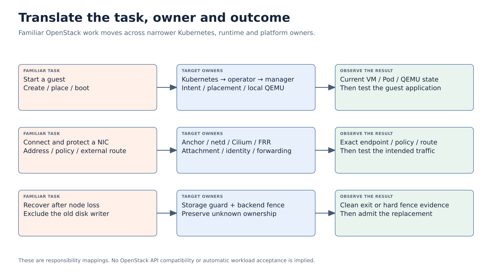
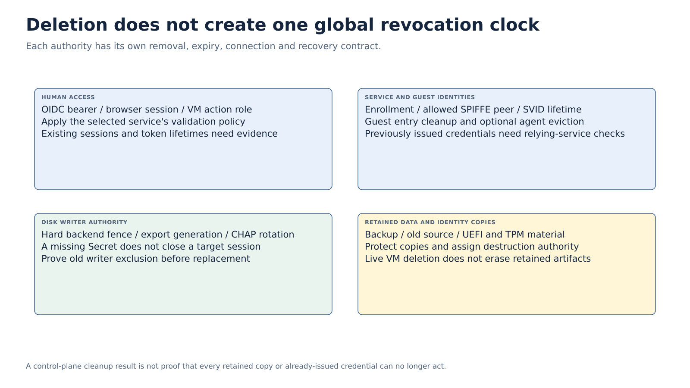

OpenStack operator handover
An OpenStack operator in the qrab model
Daily tasks / workload cutover / continuity
Evidence: S02, S04, S08, S13, U111 / 12 · operator

Translate the task, owner and outcome
OpenStack operator handover
Guest power and Pod lifetime are separate
- In-place Off stops QEMU/swtpm and leaves manager reachable.
- Declarative spec.running=false removes the VM Pod.
- Observe guest power, current Pod incarnation and application state separately.
Evidence: S02, S03, S04, S05, S193 / 12 · operator
OpenStack operator handover
Growth crosses more than one boundary
- Kubelet admits container growth before manager CPU/memory hotplug.
- Disk capacity grows at the backend before QMP block resize.
- Guest onlining and filesystem growth need their own evidence.
Evidence: S02, S04, S13, S144 / 12 · operator

Storage: simple control and I/O overview
OpenStack operator handover
A failed node is an ownership problem
- Preserve unknown disk ownership while the old writer may still act.
- Require clean-exit evidence or a hard backend fence before replacement.
- Reconciliation and rescheduling do not manufacture durable bytes.
Evidence: S05, S13, S14, U126 / 12 · operator

Move one workload, then retire its old owner
OpenStack operator handover
Rollback changes after the target accepts writes
Before target writes
Use the rehearsed ownership and route reversal. The retained source must still be current.
After target writes
Source data is stale. Reconcile accepted writes before an application-specific failback.
Retain with an owner
Control accidental restarts, protect copies and define eventual destruction.
Evidence: S05, S13, S148 / 12 · operator

A restore needs more than disk bytes

Different authorities have different revocation clocks
OpenStack operator handover
Retire the service after its last obligation moves
- Inventory actual consumers and workload requirements.
- Record data, network, credential and retained-copy ownership.
- Keep source changes, image publication and rollout as separate operations.
Evidence: S13, S14, M01, M0211 / 12 · operator
OpenStack operator handover
The handover record should answer three questions
- Which object expresses the desired operation?
- Which owner has authority to perform the effect?
- Which observation proves the workload outcome?
Evidence: S02, S03, S04, S13, T0112 / 12 · operator